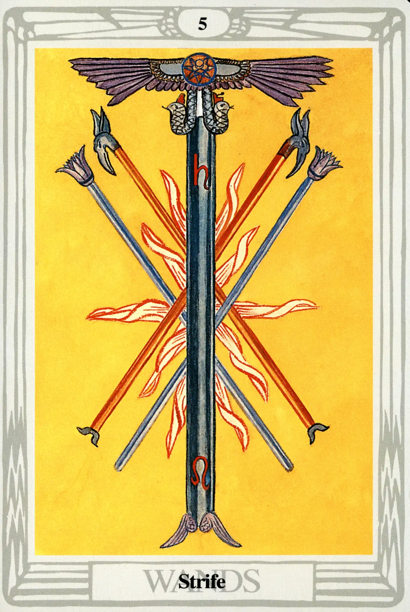

Wands
Five of Wands
Strife

(Saturn in Leo)
0° to 10° Leo
July 22 to August 1
Original Title: Lord of Strife.
Golden Dawn Model: Two hands (one from each side of the card) appear from clouds and clasp in the center with the grip of the First Order. They hold four wands, crossed two over two. A third hand appears from a cloud at the lower part of the card, holding an upright wand, which passes between the others. Flames flash where wands meet.
King Scale for Geburah: Orange.
The Four Scales for Saturn: Indigo; Black; Blue-black; Black, rayed Blue.
The Four Scales for Leo: Yellow (greenish); Deep Purple; Grey; Reddish Amber.
Formula: 5 (Geburah) of Wands (Atziluth) + Saturn in Leo = STRIFE
In
The Book of Thoth, Crowley writes more about the Five of Wands than any other small card in this suit. Could it be because this card represents the first decan of Leo, which happens to be where we find the Ascendant in Crowley's astrological natal chart? Crowley identified strongly with Leo. His signature even bore the astrological sign of Leo in place of the “A” of Aleister.
This is one of only three cards on which Crowley literally left his mark. If we look closely at the orb of the winged solar disk atop the large version of the Chief Adept's wand in the center of the card, we find the image of Crowley's personal magical device, the Mark of the Beast upon the seven-pointed star of Babalon. This symbol is the device of the Ace of Disks (by tradition, one of the cards that most often bears the signature of the deck's creator) and the Prince of Wands, who also rules the 30° period in which we find Crowley's Ascendant.
Like Crowley himself, this card is a wild mix of profound contradictions: fiery Leo is happy enough in fiery Geburah, and Geburah implies motion and offers an environment of strength and activity. Saturn, on the other hand, presents a heavy and constant resistance to all this. This card is a picture of hot, pressurized magma struggling to reach the surface of the volcano, but frustrated by the sheer weight of the mountain itself